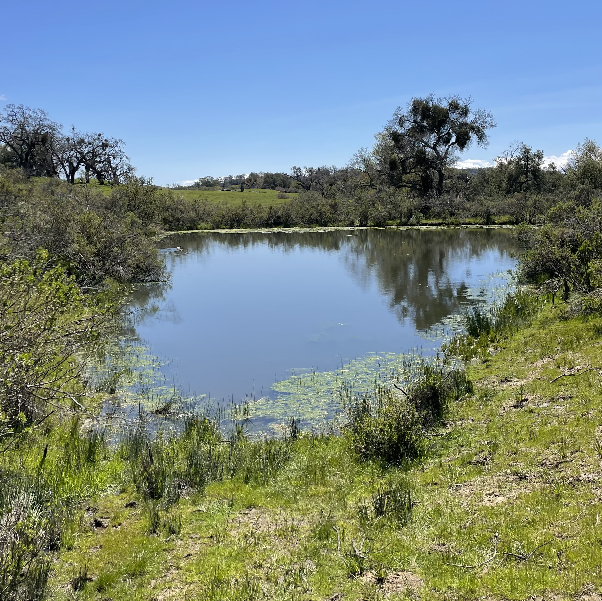
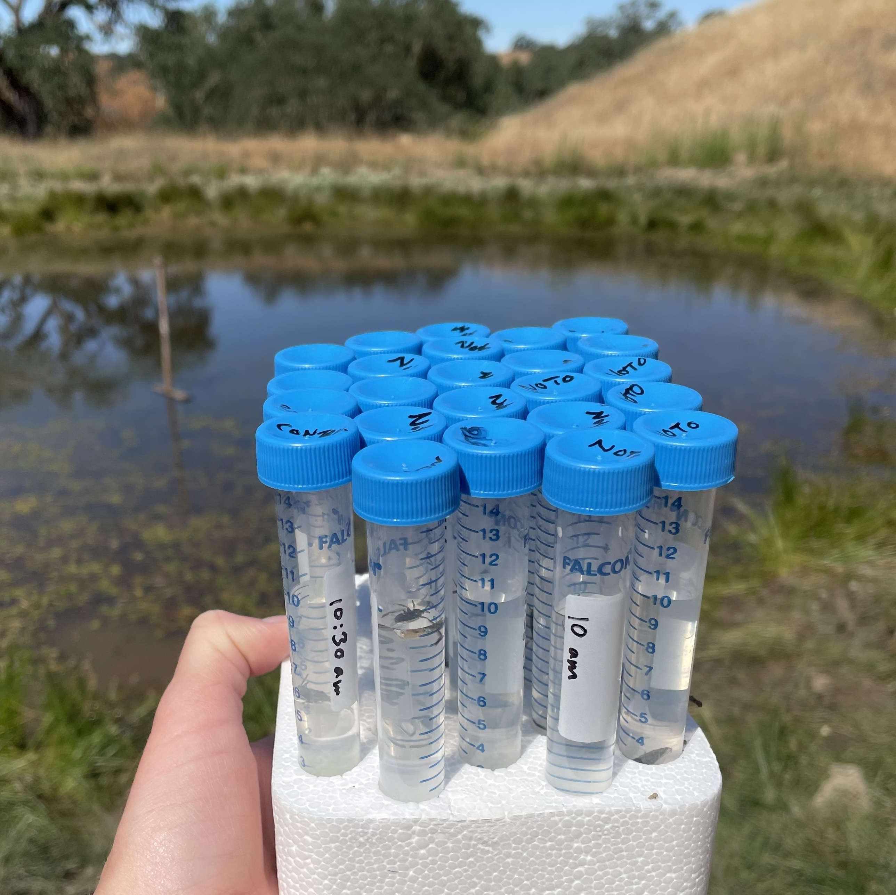
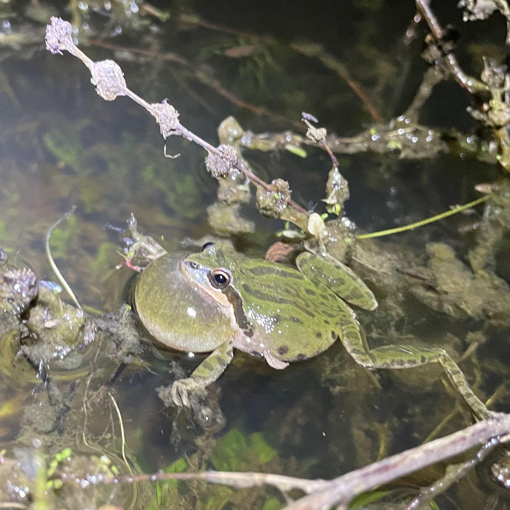
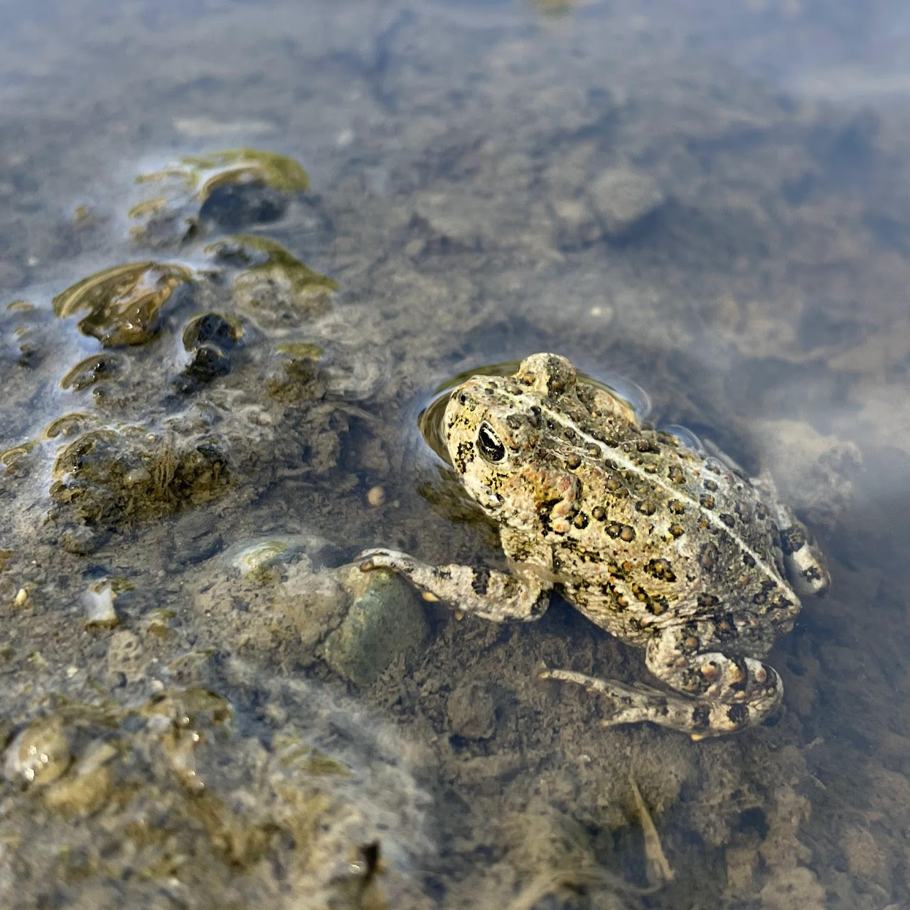
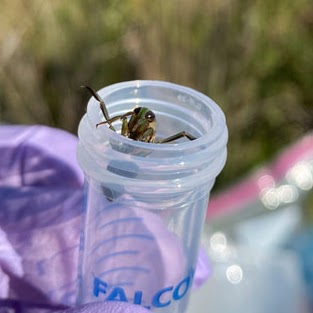
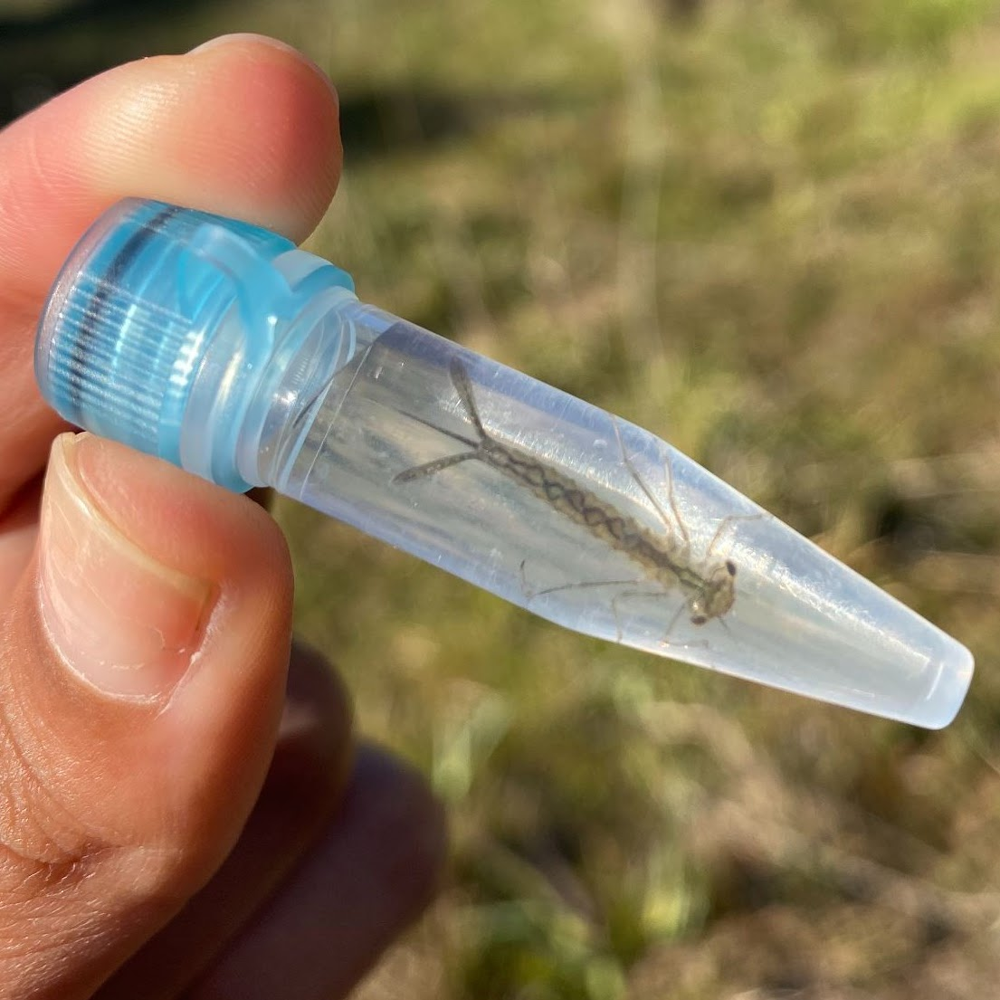
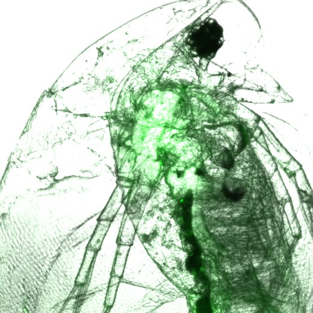
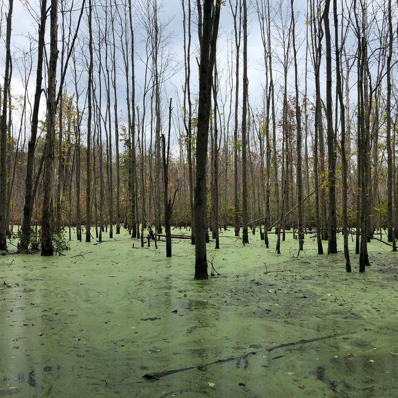
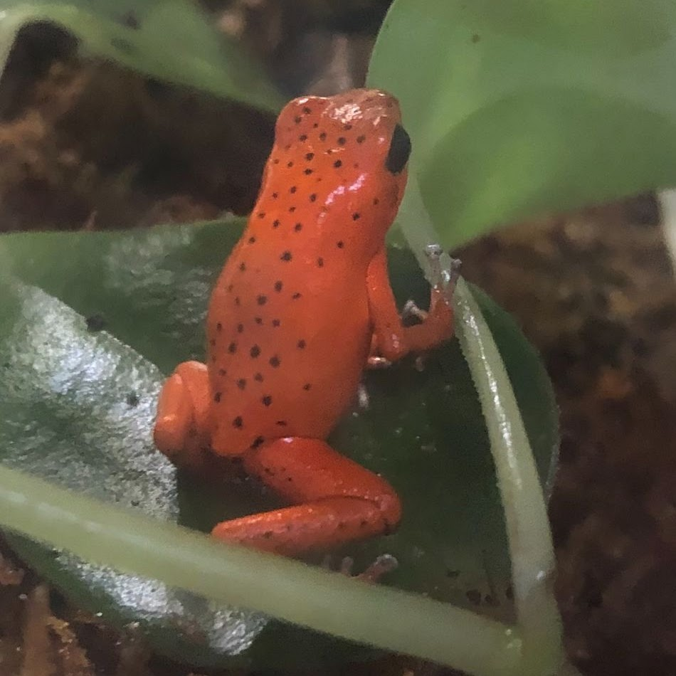
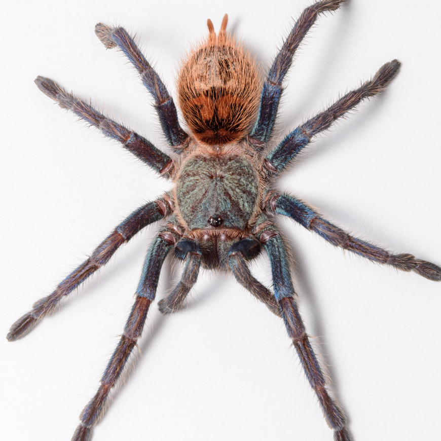

Research Mentorship
Undergraduate Mentee Independent Research Projects


Optimizing two different water filtration techniques for environmental DNA detection of frog-killing pathogen
- Emily Nix - Senior Thesis
- UC Santa Barbara 2024
- UCSB Undergraduate Research & Creative Activities Fellow
Investigating the Roles of Amphipods, a Pond-Dwelling Invertebrate, and Water Temperature in Amphibian Disease
- Jasmine Tesoro - Senior Thesis
- UC Santa Barbara 2024
- UCSB Undergraduate Research & Creative Activities Fellow


Investigation of Water Storage and Filtration Methods on eDNA Detection of Bd in Water
- Elizabeth Bodenhamer - Senior Thesis
- UC Santa Barbara 2023
- UCSB Undergraduate Research & Creative Activities Fellow
The Effects of Soil Storage Method and Duration on Detection of Bd eDNA in Soil
- Kathryn Koo - Senior Thesis
- UC Santa Barbara 2023
- UCSB Undergraduate Research & Creative Activities Fellow


Determination of Traits That Predict the Ability of Invertebrates to Host and Transmit Bd
- Rachel Leowy - Senior Thesis
- UC Santa Barbara 2023
- UCSB Worster Fellow & UCSB Undergraduate Research & Creative Activities Fellow
Exploration of Bd Loads in Internal Macroinvertebrate Tissues Across Taxa
- Sammi Yeung - Senior Thesis
- UC Santa Barbara 2023


Assessing the impact of elevated temperatures associated with urbanization on Bd consumption by Daphnia
- Nuzha Baksh - Senior Thesis
- UC Santa Barbara 2022
- UCSB Schmidt Fellow & UCSB Gene & Susan Lucas Fellow
eDNA Analysis of Bd Presence and Prevalence Across Seasonal and Temperature Variation
- Miranda Kosowsky - Senior Thesis
- University of Pittsburgh 2021


Color Analysis of Strawberry Poison Dart Frog, Oophaga Pumilio
- Madeline Bush - Internship Project
- University of Pittsburgh 2021
Eye Size Reflects Habitat and Sex in Tarantulas
- Lily Turri - AP Biology Capstone
- Allderdice High School 2021
- Principal Mentor: Dr. Sebastian Echeverri
- Image credit: S. Echeverri
Mentees
Current Mentees:
- Eva Howell - UC Santa Barbara 2023 - Present
- Olivia Schroeder- UC Santa Barbara 2023 - Present
- Janna Ellman - UC Santa Barbara 2023 - Present
- Emily Nix - UC Santa Barbara 2023 - Present
- Jasmine Tesoro - UC Santa Barbara 2023 - Present
- Elizabeth Bodenhamer- UC Santa Barbara 2022 - Present
- Hope Hahn - UC Santa Barbara 2022 - Present
Previous Mentees:
- Sammi Yeung - UC Santa Barbara 2022 - 2023
- Kathryn Koo - UC Santa Barbara 2022 - 2023
- Rachel Leowy - UC Santa Barbara 2022 - 2023
- Nuzha Baksh - UC Santa Barbara 2021 - 2022
- Leann Hagen - UC Santa Barbara Fall 2021
- Sarah Boyle - UC Santa Barbara Summer 2021
- Lily Turri - University of Pittsburgh 2020 - 2021
- Madeline Bush - University of Pittsburgh 2020 - 2021
- Anna Meinzen - University of Pittsburgh 2020 - 2021
- Miranda Kosowsky - University of Pittsburgh 2020 - 2021
- Joshua Hickman - University of Pittsburgh 2019 - 2020
Mentee Presentations
May 2024 Undergraduate Research and Creative Activities Conference Panel: “A look into fungal pathogen Bd: Time series and location” J. Tesoro, C.L. Nordheim, and C.J. Briggs.
May 2024 Undergraduate Research and Creative Activities Conference Panel: “Optimizing two different water filtration techniques for eDNA detection of frog-killing pathogen” E. Nix, K. Koo, R.Chen C.L. Nordheim, and C.J. Briggs.
April 2024 UC Santa Barbara Ecology, Evolution, and Marine Biology Undergraduate Research Conference: “Beneath the Surface: Investigating Aquatic Macroinvertebrate Disease Shedding Rates of Batrachochytrium dendrobatidis (Bd) Across Mountain Yellow-legged Frog Populations” O. Schroeder, J. Ellman, E. Howell, C.L. Nordheim, and C.J. Briggs.
April 2024 UC Santa Barbara Ecology, Evolution, and Marine Biology Undergraduate Research Conference: “Optimizing two different water filtration techniques for environmental DNA detection of frog-killing pathogen” E. Nix, K. Koo, R.Chen C.L. Nordheim, and C.J. Briggs.
April 2024 UC Santa Barbara Ecology, Evolution, and Marine Biology Undergraduate Research Conference: “A look into fungal pathogen Bd: Time series and location” J. Tesoro, C.L. Nordheim, and C.J. Briggs.
May 2023 UC Santa Barbara Worster Symposium: “Elucidating the roles of aquatic invertebrates in amphibian pathogen dynamics” R. Loewy, C.L. Nordheim, and C.J. Briggs.
May 2023 UC Santa Barbara Undergraduate Research and Creative Activities Conference Panel: “Investigation into the effects of storage method and duration on detection of pathogenic Batrachochytrium dendrobatidis (Bd) environmental DNA (eDNA)” K.Koo, C.L. Nordheim, T.S. Katz, R. Chen, and C.J. Briggs.
May 2023 UC Santa Barbara Undergraduate Research and Creative Activities Poster Colloquim: “The Effects of Storage and Filtration Methods on eDNA Detection of Batrachochytrium dendrobatidis in Water” E. Bodenhamer, C.L. Nordheim, T.S. Katz and C.J. Briggs.
May 2023 UC Santa Barbara UC Santa Barbara Undergraduate Research and Creative Activities Poster Colloquim: “Elucidating the Ability of Invertebrates to Host and Shed Batrachochytrium dendrobatidis (Bd)” R. Loewy, C.L. Nordheim, and C.J. Briggs.
April 2023 UC Santa Barbara Ecology, Evolution, and Marine Biology Undergraduate Research Conference: “The Effects of Storage and Filtration Methods on eDNA Detection of Batrachochytrium dendrobatidis in Water” E. Bodenhamer, C.L. Nordheim, T.S. Katz and C.J. Briggs.
April 2023 UC Santa Barbara Ecology, Evolution, and Marine Biology Undergraduate Research Conference: “Investigation into the effects of storage method and duration on detection of pathogenic Batrachochytrium dendrobatidis (Bd) environmental DNA (eDNA)” K.Koo, C.L. Nordheim, T.S. Katz, R. Chen, and C.J. Briggs.
April 2023 UC Santa Barbara Ecology, Evolution, and Marine Biology Undergraduate Research Conference: “Macroinvertebrates as Potential Bd Reservoirs” S. Yeung, C.L. Nordheim, and C.J. Briggs.
April 2022 UC Santa Barbara Ecology, Evolution, and Marine Biology Undergraduate Research Conference: “Effects of elevated temperatures associated with urbanization on the Bd-zoospore grazing ability of Daphnia magna” N.N. Baksh, C.L. Nordheim, and C.J. Briggs.
July 2021 American Arachnological Society Meeting: “Eye Size Reflects Habitat and Sex in Tarantulas” L.E.Turri, C.L. Nordheim, S. Foley, and S.A. Echeverri. Link to talk on YouTube
Mentee Research Fellowships
- UCSB URCA Research Grant - Jasmine Tesoro 2023
- UCSB URCA Research Grant - Emily Nix 2023
- UCSB Schmidt Fellowship - Olivia Schroeder 2023
- UCSB Schmidt Fellowship - Janna Ellman 2023
- UCSB URCA Research Grant - Elizabeth Bodenhamer 2022
- UCSB URCA Research Grant - Rachel Loewy 2022
- UCSB URCA Research Grant - Kathryn Koo 2022
- UCSB Worster Summer Research Fellowship- Rachel Loewy 2022
- UCSB Schmidt Fellowship - Nuzha Baksh 2021